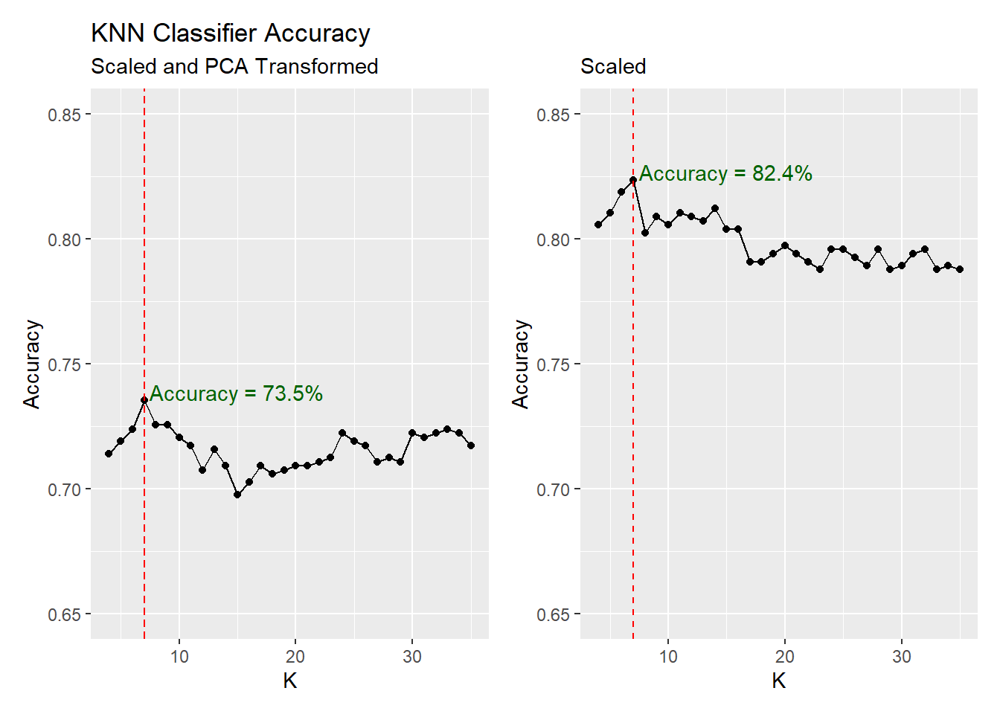
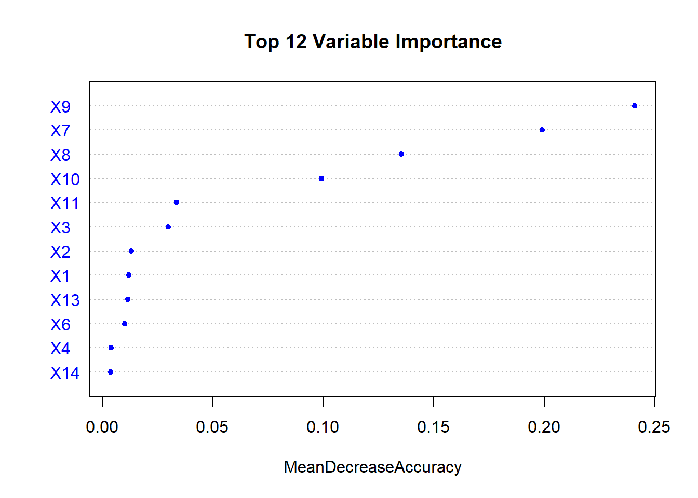
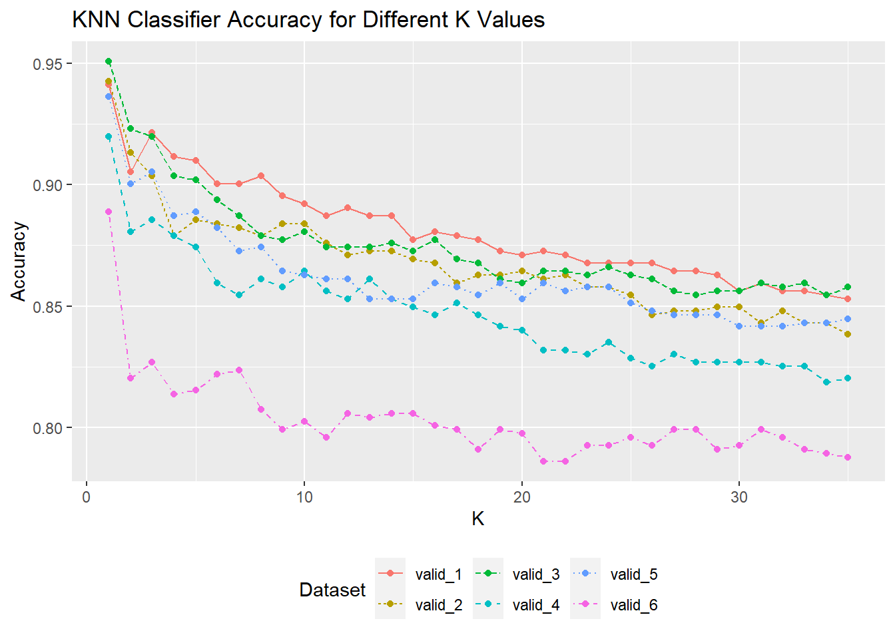

Chemical Sample Classification Report
Classification Models
PCA Performance
Three classifiers were developed and fitted with PCA and non-PCA data to compare results: k nearest neighbour (KNN), model based discriminant analysis (DA) and support vector machines (SVM).
Models were trained and then validated on ‘unseen’ data. Accuracy (correct model predictions) was the performance metric.
K Nearest Neighbour
KNN classifies samples into groups by ‘distance’ to neighbours. Overall, non-PCA models performed better with a best default accuracy of 0.82% compared to 73.5%.
KNN classifies samples into groups by ‘distance’ to neighbours. Overall, non-PCA models performed better with a best default accuracy of 0.82% compared to 0.74%.
Discriminant Analysis
Discriminant Analysis classification creates groups from mixed mathematical models based on different variable means. The default model had accuracies of 96.41% (non-PCA) and 75% on the ‘validation’ dataset.
Label E is particularly challenging to classify with false positives and false negative misclassifications.
Support Vector Machines
SVM which did not perform as well as DA or KNN. The non-PCA model had an accuracy of 90.69% and the PCA model resulted in an accuracy of only 69.77%.
Decision
PCA is not appropriate on this dataset as it does not capture enough variability for a successful classifier.
Feature Reduction
An alternative to dimension reduction is feature reduction - removing variables. Some variables may not add explanatory power because they capture similar information to other variables or they do not contain relevant information.
Clustering techniques like trees and random forests, can help identify candidate variables for inclusion / exclusion. Figure 2 shows taht variables X7-X10 are more important when splitting into labels.

Reduced variable datasets to test performance:
| Set | Included Variables |
|---|---|
| Set 1 | X7, X8, X9, X10 |
| Set 2 | X7, X8, X9, X10, X3, X1 |
| Set 3 | X7, X8, X9, X10, X3, X11 |
| Set 4 | X7, X8, X9, X10, X3, X1, X2, X13 |
| Set 5 | X7, X8, X9, X10, X3, X11, X16 |
Model Performance
Models were optimsed by searching through combinations of hyperparameters on datasets with different variables.
KNN loop
The best performing KNN model uses valid_3 consisting of: X7, X8, X9, X10, X3, X11. The complete dataset (valid_6) peaks with an accuracy of 88.89% compared to 95.1% for the reduced variable set.

DA loop
Discriminant Analysis (LDA) models were tuned with ‘n.components’, ‘diagonal’ and ‘model name’ hyperparameters to allow the algorithm to find the combination of mixture models with the best accuracy for the groups.
The ten best DA models are:
dataset | accuracy |
|---|---|
Complete | 0.9771242 |
Complete | 0.9754902 |
Complete | 0.9738562 |
Reduced Set 3 | 0.9722222 |
Complete | 0.9722222 |
Complete | 0.9705882 |
Reduced Set 4 | 0.9689542 |
Complete | 0.9689542 |
Reduced Set 2 | 0.9673203 |
Reduced Set 3 | 0.9673203 |
The complete dataset has the highest accuracy (97.71%) but there are 4 models using reduced datasets in the top 10. Set 3 has an accuracy of 97.22% - a performance difference of 0.49% using only 6 variables instead of 20.
Random Forest loop
The random forest classifiers are very quick to run and perform very well. All of the forests achieve higher than 95.92% accuracy with the complete dataset marginally best with an accuracy of 96.73%.